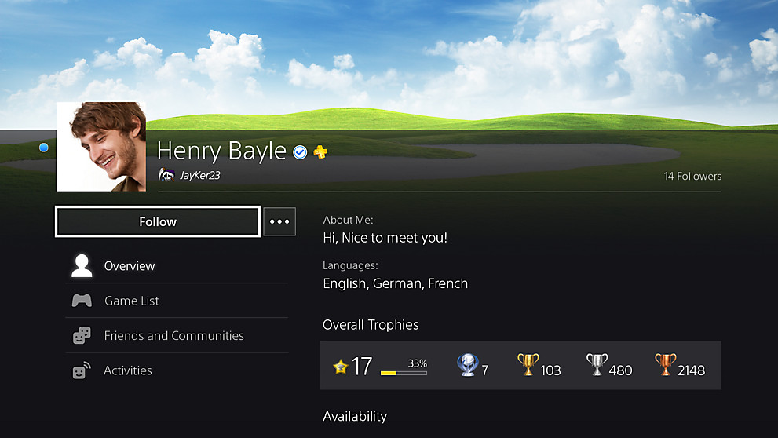
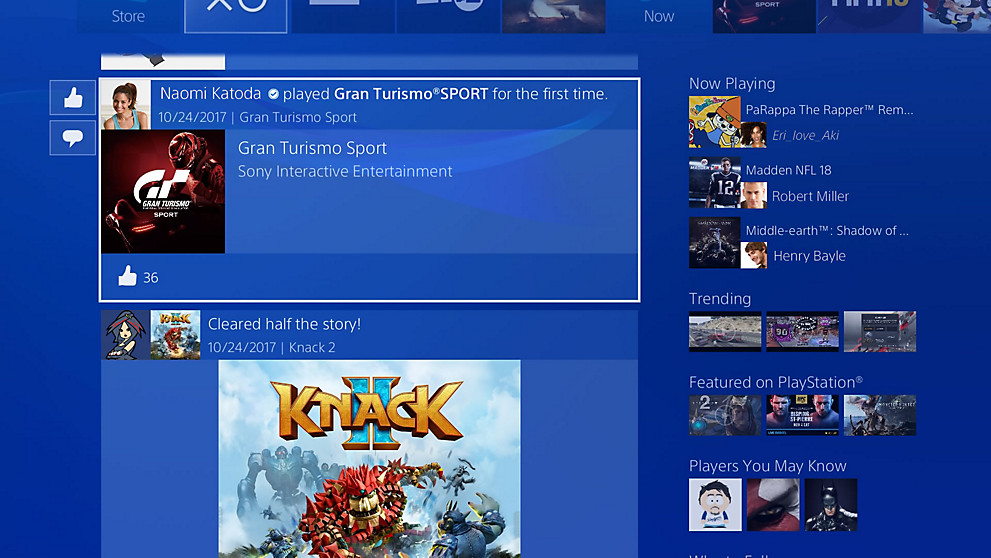
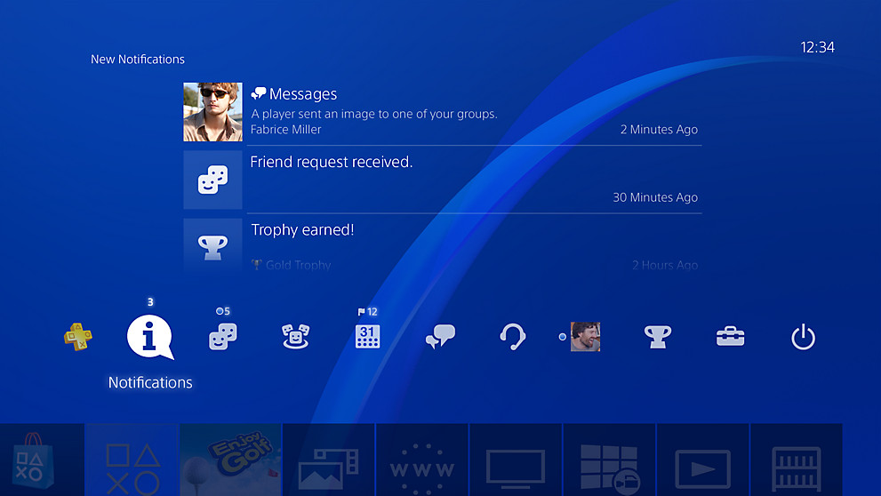

 Stel uw gebruikersaccount in om verbinding te maken met PlayStation Network en toegang te krijgen tot de robuuste online functies van het PlayStation 4-systeem. Pas uw account aan met een unieke avatar en koppel deze aan uw Facebook-account om uw profielfoto en naam te delen met uw vriendenlijst. Je kunt ook de achtergrondafbeelding en het kleurenschema van je profiel wijzigen met een screenshot van je favoriete game, of je eigen aangepaste dashboardthema maken.
 Bekijk wat je vrienden spelen in What's New, waar je hun nieuwste gedeelde screenshots, videoclips en ontgrendelde trofeeën kunt bekijken. Je kunt ook de nieuwste trending Live van PlayStation-uitzendingen van topgames bekijken.
 In het startscherm van PlayStation 4 zie je je games en gedownloade inhoud, streamingdiensten zoals PlayStation Vue, YouTube en Netflix, evenals je online communityfuncties zoals vriendenlijst, meldingen, communities en evenementen. Organiseer games en andere inhoud in aangepaste mappen en pas uw startscherm aan met unieke thema's uit de PlayStation Store.